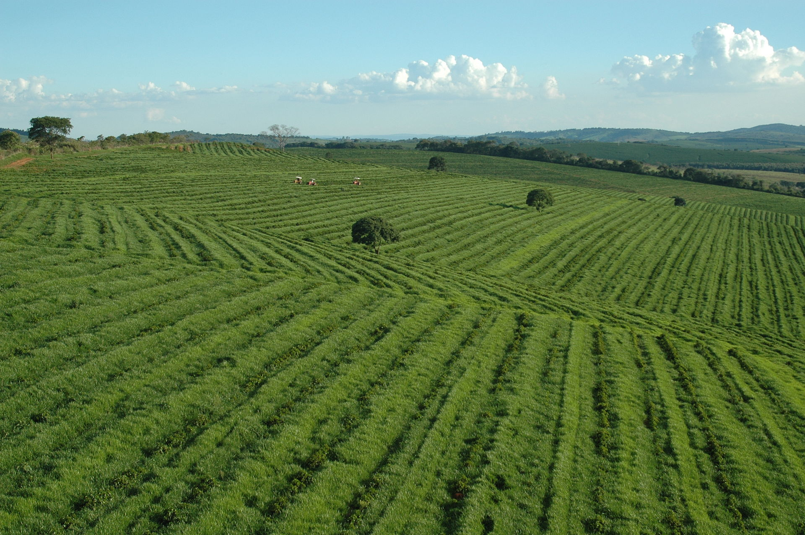

-
Brazil
Coffee was not native to the Americas and had to be planted in the country. The first coffee was grown by Native Americans. The first coffee bush in Brazil was planted by Francisco de Melo Palheta in Pará in 1727.[1] According to the legend, the Portuguese were looking for a cut of the coffee market, but could not obtain seeds from bordering French Guiana due to the governor's unwillingness to export the seeds. Palheta was sent to French Guiana on a diplomatic mission to resolve a border dispute. On his way back home, he managed to smuggle the seeds into Brazil by seducing the governor's wife who secretly gave him a bouquet spiked with seeds.[2][3]
Coffee spread from Pará and reached Rio de Janeiro in 1770, but was only produced for domestic consumption until the early 19th century when American and European demand increased,[4] creating the first of two coffee booms.[5] The cycle ran from the 1830s to 1850s, contributing to the decline of slavery and increased industrialization.[6] Coffee plantations in Rio de Janeiro, São Paulo and Minas Gerais quickly grew in size in the 1820s,[4] accounting for 20% of worlds production.[7] By the 1830s, coffee had become Brazil's largest export and accounted for 30% of the world's production. In the 1840s, both the share of total exports and of world production reached 40%, making Brazil the largest coffee producer.[8] The early coffee industry was dependent on slaves; in the first half of the 19th century 1.5 million slaves were imported to work on the plantations.[9] When the foreign slave trade was outlawed in 1850, plantation owners began turning more and more to European immigrants to meet the demand of labor.[10] However, internal slave trade with the north continued until slavery was finally abolished in Brazil in 1888.[11]
The second boom ran from the 1880s to the 1930s, corresponding to a period in Brazilian politics called café com leite ("coffee with milk"). The name refers to the largest states' dominating industries: coffee in São Paulo and dairy in Minas Gerais.[12] This period also saw the Brazilian government start the practice of valorization, a protectionist practice designed to stabilize the price of coffee.[13]
 The Zona da Mata Mineira district grew 90% of the coffee in Minas Gerais region during the 1880s and 70% during the 1920s. Most of the workers were black men, including both slaves and free. Increasingly Italian, Spanish and Japanese immigrants provided the expanded labor force.[14][15] The railway system was built to haul the coffee beans to market, but it also provided essential internal transportation for both freight and passengers, as well as develop a large skilled labor force.[16] The growing coffee industry attracted millions of immigrants and transformed São Paulo from a small town to the largest industrial center in the developing world.[6] The city's population of 30,000 in the 1850s grew to 70,000 in 1890 and 240,000 in 1900. With one million inhabitants in the 1930s São Paulo surpassed Rio de Janeiro as the country's largest city and most important industrial center.[17]
By the early 20th century, coffee accounted for 16% of Brazil's gross national product, and three-fourths of its export earnings. The growers and exporters played major roles in politics; however historians are debating whether or not they were the most powerful actors in the political system.[18] The February 1906 Taubaté Agreement is a clear example of the high influence on federal politics São Paulo gained from the coffee production. Overproduction had decreased the price of coffee, and to protect the coffee industry – and the interests of the local coffee elite –[19] the government was to control the price by buying abundant harvests and sell it at the international market at a better opportunity.[20] The scheme sparked a temporary rise in the price and promoted the continued expansion of the coffee production.[21] The valorization scheme was successful from the perspective of the planters and the Brazilian state,[22] but led to a global oversupply and increased the damages from the crash during the Great Depression in the 1930s.[21]
In the 1920s, Brazil was a nearly monopolist of the international coffee market and supplied 80% of the world's coffee.[23] Since the 1950s, the country's market share steadily declined due to increased global production.[24] Despite a falling share and attempts by the government to decrease the export sector's dependency on a single crop, coffee still accounted for 60% of Brazil's total exports as late as 1960.[25]